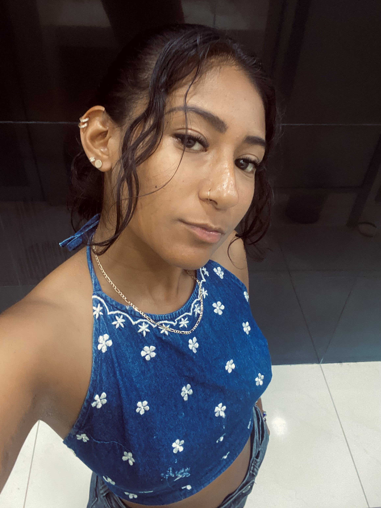
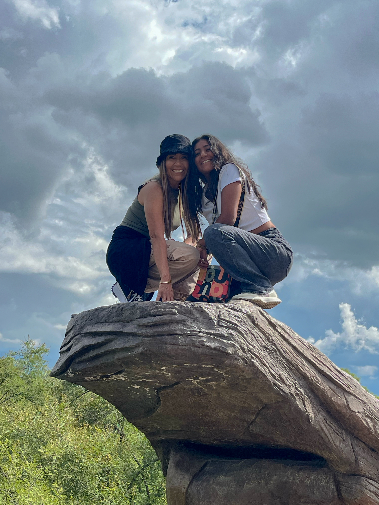
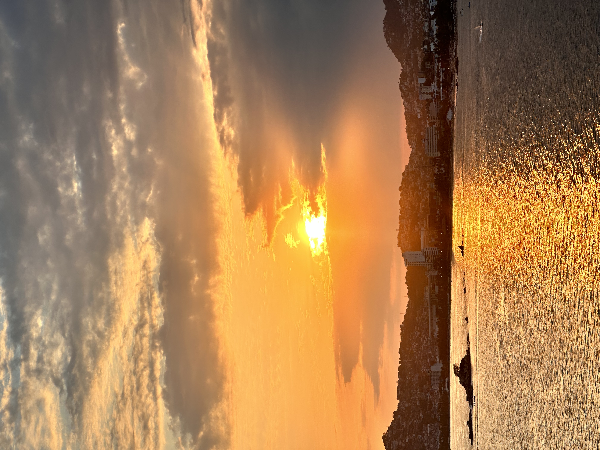
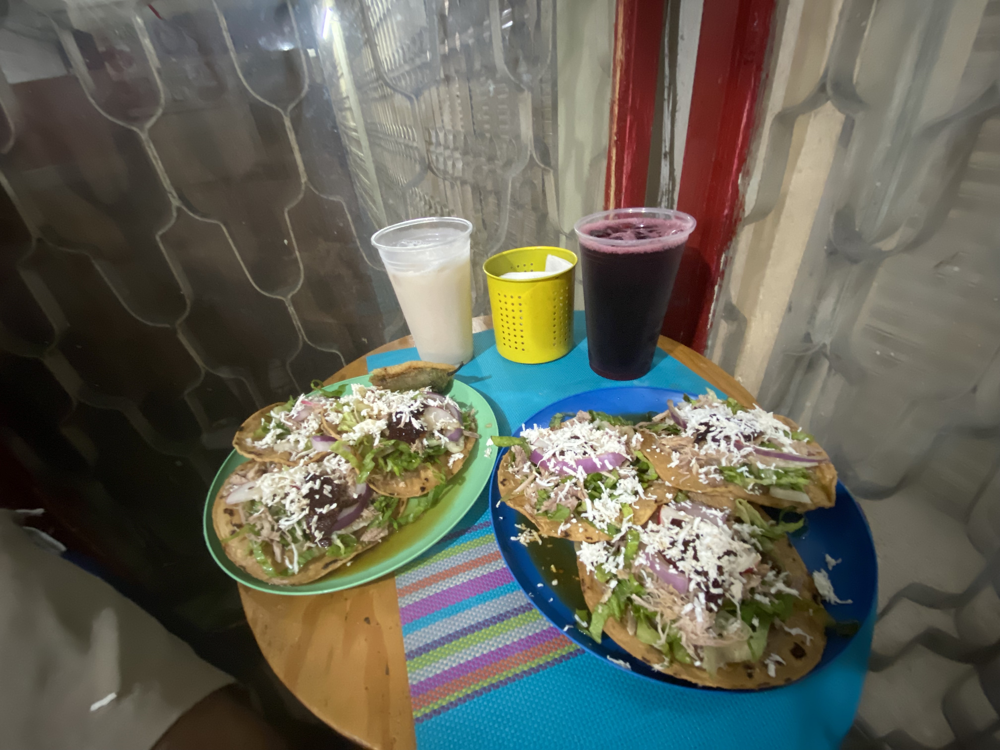
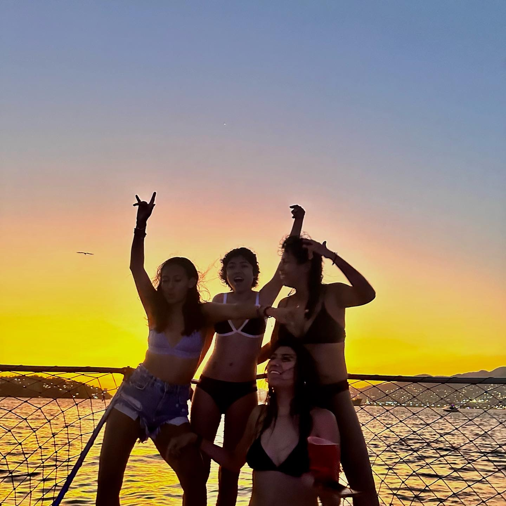
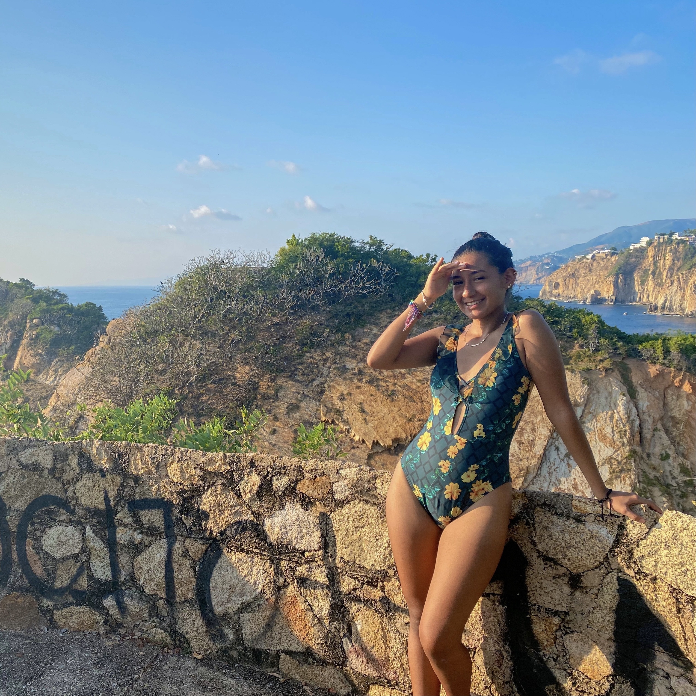

¿Quien soy?
Hola! Soy Arantza Paola, pero mis amigos me dicen AraPao, originaria de la bahía más hermosa del mundo (y si no sabes cual es, ya tienes tarea.)
Me encanta la naturaleza, el mar, los atardeceres ylas mañanas frías pero sobre todo, mi propia compañia. Me encanta que el Diseño Gráfico me permite redescubrirme una y otra vez, de mil maneras, experimento conmigo misma y con mi creatividad cada día un poquito más.
Uno de mis propositos es llevar la creatividad a lugares remotos del mundo, donde crean que solo existe blanco y negro.
Mi familia
Mi familia es muy pequeña, somos mi mami, mi perrito y yo. Mi papáfallecio hace 8 años, un evento que marco mi vida para siempre, y lo sigue haciendo, pero ahora desde la gratitud y el amor.
Mi perro se llama Pancho y también tiene 8 años, él llego a mi vida cuando mi papá se fue de ella, Pancho es mi compañero incondicional, a donde sea que vaya siempre va conmigo, literalmente a donde sea que voy, él va también.
Mis hobbies
Casar atardeceres

Comer rico

Salir con amigos

Playita
